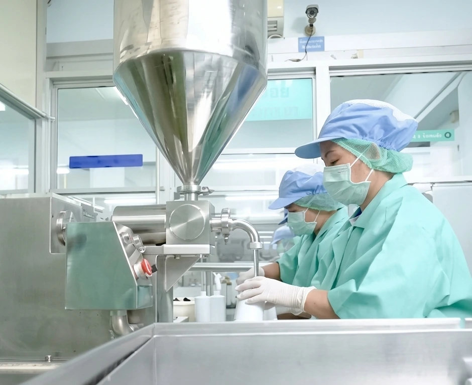
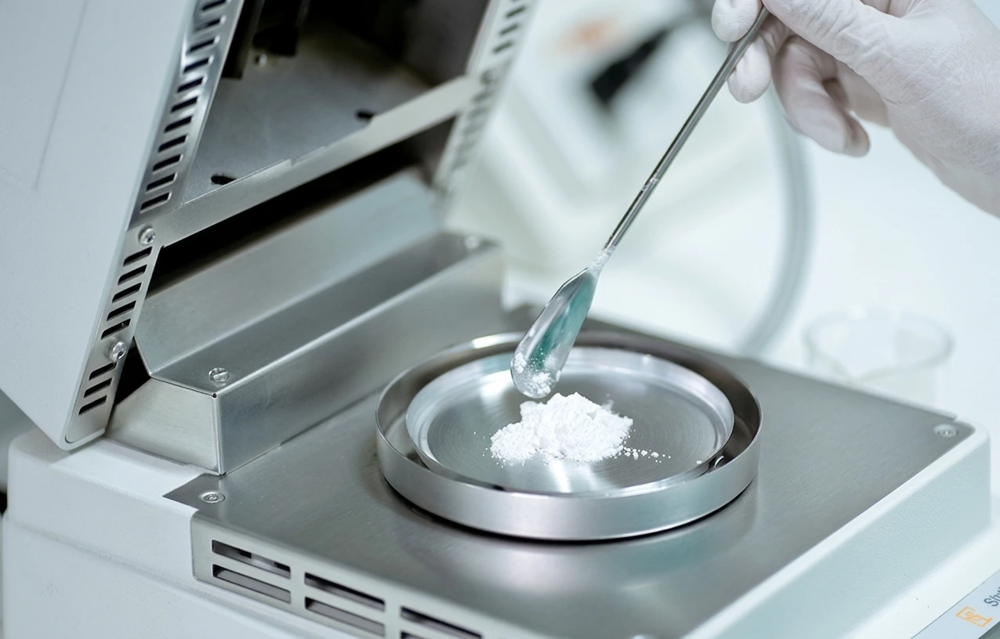
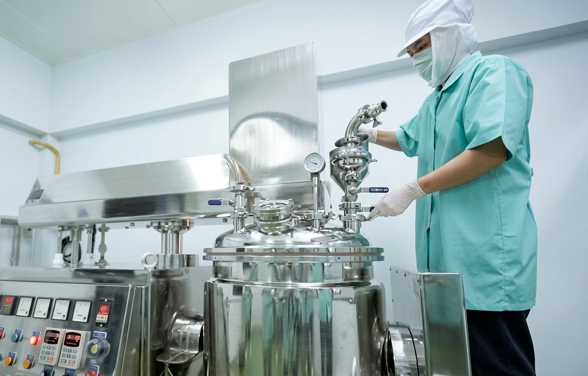
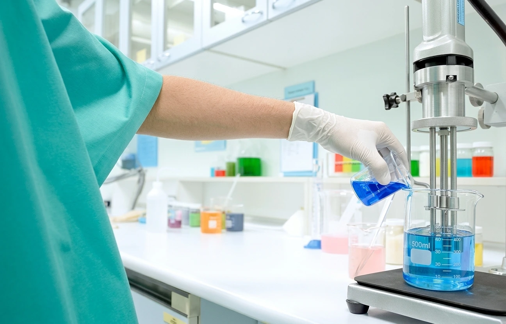
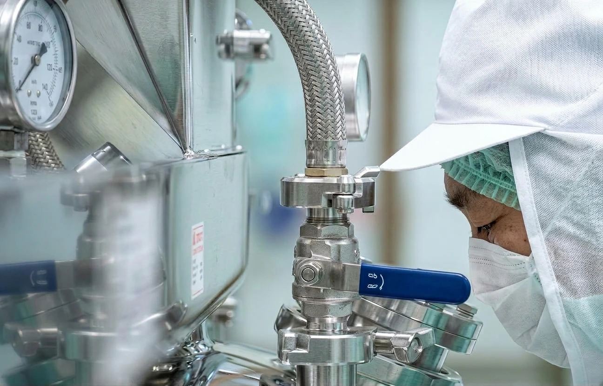

01
Advisory
การให้คำปรึกษา
รับฟังแนวคิดและเป้าหมายของแบรนด์ เพื่อช่วยกำหนดประเภทผลิตภัณฑ์ ขอบเขตการพัฒนา และรายละเอียดที่ควรเตรียมก่อนเริ่มผลิต
รับฟังแนวคิดและเป้าหมายของแบรนด์ เพื่อช่วยกำหนดประเภทผลิตภัณฑ์ ขอบเขตการพัฒนา และรายละเอียดที่ควรเตรียมก่อนเริ่มผลิต
ดำเนินการผลิตตามสูตร ข้อกำหนด และรายละเอียดที่ตกลงร่วมกัน โดยให้ความสำคัญกับความสะอาดและการควบคุมคุณภาพในกระบวนการ
ศึกษาวัตถุดิบและพัฒนาสูตรตัวอย่างให้สอดคล้องกับแนวคิด ลักษณะการใช้งาน และความต้องการของแบรนด์
ช่วยวางแนวทางด้านบรรจุภัณฑ์และฉลากให้เหมาะกับรูปแบบผลิตภัณฑ์ พร้อมพิจารณาข้อมูลที่จำเป็นตามข้อกำหนดที่เกี่ยวข้อง
ให้คำแนะนำและสนับสนุนการเตรียมข้อมูลสำหรับการจดแจ้งหรือขึ้นทะเบียนตามประเภทผลิตภัณฑ์และข้อกำหนดที่เกี่ยวข้อง
ประสานการจัดส่งผลิตภัณฑ์ตามเงื่อนไขและพื้นที่บริการที่ตกลงกัน เพื่อให้การส่งมอบเป็นไปอย่างเป็นระบบ
เราพัฒนาผลิตภัณฑ์โดยผสานความรู้ด้านวัตถุดิบ การพัฒนาสูตร และการควบคุมคุณภาพ เพื่อเปลี่ยนแนวคิดของแบรนด์ให้เป็นผลิตภัณฑ์ที่พร้อมสำหรับการผลิตจริง
ค้นคว้าวัตถุดิบ เพื่อกำหนดคอนเซปต์ผลิตภัณฑ์ที่มีจุดขายโดดเด่นและตรงใจกลุ่มเป้าหมาย
คัดสรรวัตถุดิบคุณภาพสูงพัฒนาสูตรเฉพาะและผลิตตัวอย่างทดลองให้ลูกค้าทดสอบจนพอใจ
วางแนวทางการทดสอบตามลักษณะผลิตภัณฑ์ พร้อมพิจารณาข้อกำหนดและมาตรฐานที่เกี่ยวข้องก่อนเข้าสู่กระบวนการผลิตจริง
ถ่ายทอดกระบวนการผลิตจากห้องแล็บสู่สายการผลิตจริงพร้อมส่งมอบผลิตภัณฑ์คุณภาพที่พร้อมทำตลาด
QUALITY FIRST
ด้วยการบริหารจัดการภายใต้ระบบ GMP ของการผลิตเครื่องสำอางที่เป็นมาตรฐานสากล จึงมั่นใจได้ว่าทุกชิ้นงานที่ผ่านกระบวนการผลิตมีคุณภาพ ทีมงานที่มีคุณภาพ จึงได้ผลิตภัณฑ์ที่มีคุณภาพ

QUALITY ASSURANCE
ควบคุมคุณภาพวัตถุดิบที่นำมาใช้ในการผลิต รวมถึงในระหว่างกระบวนการผลิต และทดสอบคุณภาพของผลิตภัณฑ์

ควบคุมคุณภาพวัตถุดิบที่นำมาใช้ในกระบวนการผลิต

ติดตามและควบคุมคุณภาพในระหว่างกระบวนการผลิตอย่างเป็นระบบ

ทดสอบคุณภาพของผลิตภัณฑ์ก่อนส่งมอบให้แก่ลูกค้า


QUALITY CONFIDENCE
เราใส่ใจในทุกขั้นตอนการผลิตเพื่อให้มั่นใจว่าสินค้าที่ส่งถึงมือผู้บริโภคมีคุณภาพสูงสุด ผู้บริโภคสามารถมั่นใจได้ว่าผลิตภัณฑ์ของเรามีคุณภาพและปลอดภัย